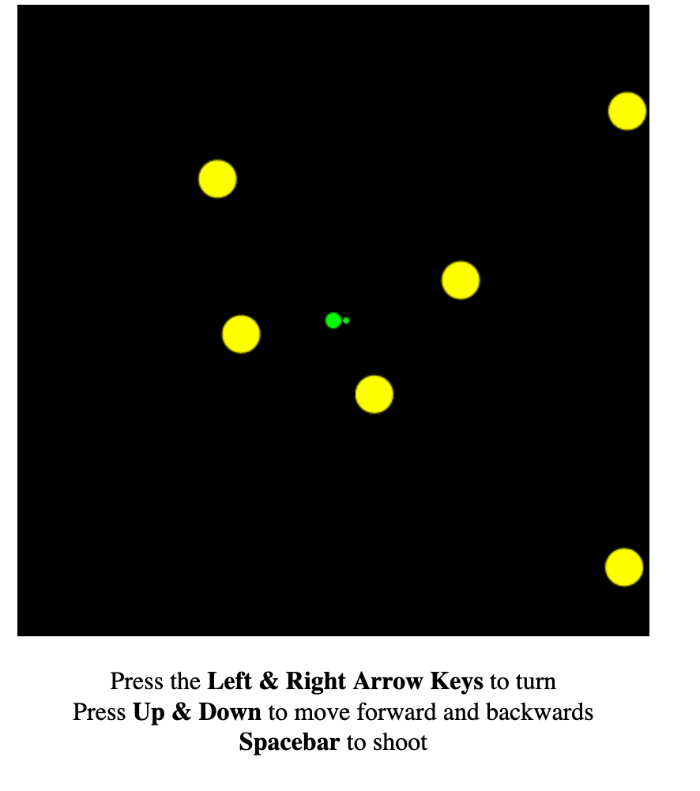
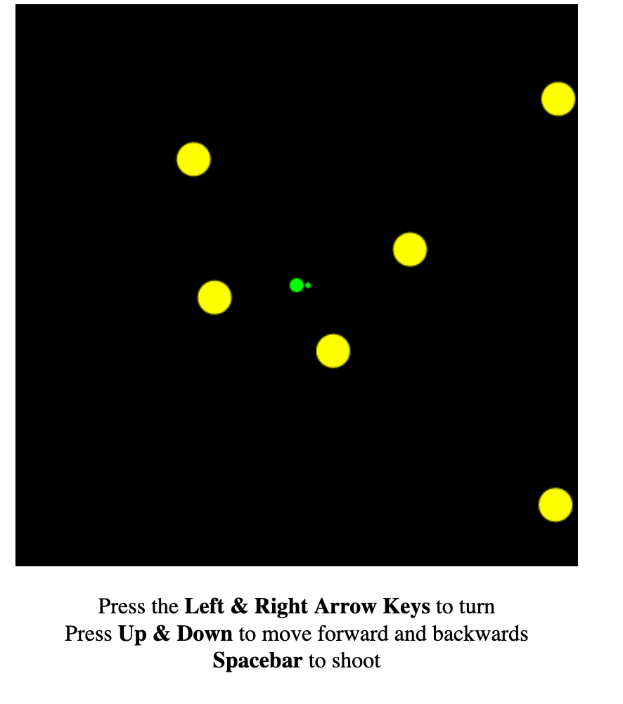
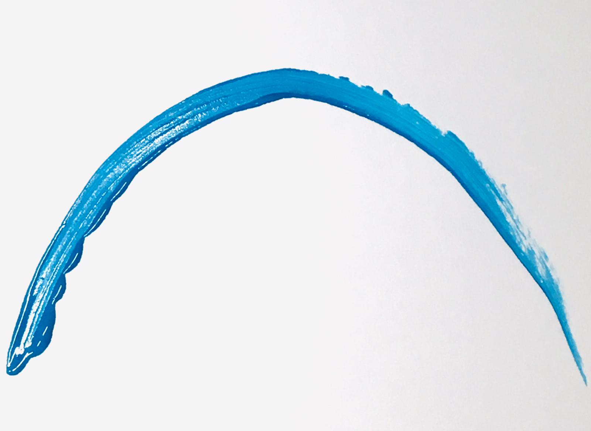
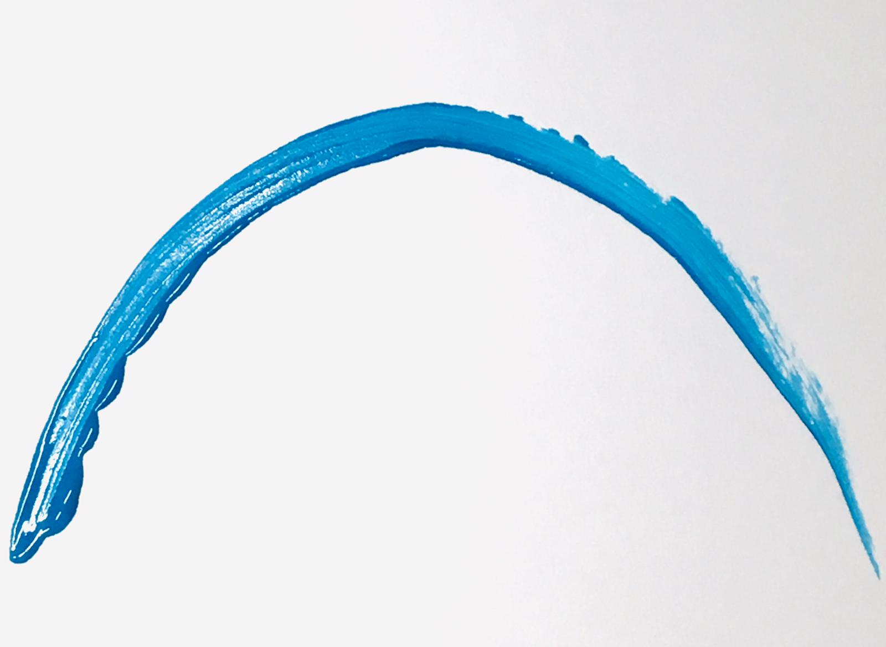

Note: for locations please refer to my LinkedIn. Rec'd as long-term hire by every academic and corporate entity listed, except Yale, CSET & RC
Human languages
English (native-level), Spanish (native), German (native), Mandarin Chinese (conversational), French (conversational), Japanese (rudimental, scored AAA JLPT N5 back in 2013)
Programming languages
Python (intermediate-advanced), JS, HTML, CSS (enough for basic web design and simple in-browser games), familiar with R, Pandas, NumPy, NLTK
Creative tools
copywriting (creative & technical), SuperCollider (intermediate, code-based sound synthesis), Digital Photography (static & moving image capture & edit using Adobe CC)
M.A. Design & Computation | Berlin University of the Arts & Technical University Berlin 2020 - 2023
Electives in economic impact analysis, digital sound synthesis, and architecture. Thesis titled “Information, Chaos, and the Measurement of Beauty” questions the limits of applying mathematical methods [e.g. information entropy] to the evaluation of aesthetics and art. First thesis to be successfully defended in the history of the program
Some projects
- Empirical analysis of the distributive economic effects of a carbon tax, based on Brazil census data, coded in R
- Lost in Compression [?], techno-philosophical study of the effects of compression algorithms on digital media & society
- Legacy of Logical Semantics, philosophical paper on the relationship of artificial languages and digital world-building
- Optimization in Coding and Making, linear programming project designed to obtain "optimal" energy mixes for European countries according to simple parameters
Courses in responsible tech
- Intersectional AI: Hacking Biases - Journal Club Philosophy and Ethics of Design and Technology, reading reflection
- Politics of Machines, project
- Critical Design Thinking
- Exploring [and critiquing] AI as Creative Tool, project
Extracurricular highlights (hackathons, concerts, workshops etc.)
- Live-coding noise concert at Ars Electronica 2022 in Linz, Austria, sound inlcuded in this radio show
- Grand finalist & category prize winner at the MIT RealityHack 2022, devpost link
- Led multiple workshops for new students (e.g. "finding fun in academic writing" workshops, scholarship search)
- Gave public lectures to students & faculty, moderated panels (e.g. on (mis-)uses of the term “entropy” across academic disciplines, on the critical evaluation of climate tech startups)
B.A. Ethics, Politics & Economics | Yale University 2014 - 2019
Electives in statistics, creative writing, and technology ethics. Thesis on the political economy of dividend-based carbon-pricing policy
Courses in responsible tech
- Ethics of Data Science, paper: Ads on a Tombstone — Redefining Human Dignity to Protect the Digital Remains of the Deceased, paper [really not my best work but an interesting topic nontheless]
- Digital Media Activism, paper focused on Chile's early internet laws
Other Programs 2015 - 2019
- Year-long Fellowship in Advanced Mandarin Chinese | National Taiwan University, writing sample
- Summer Study in Beijing: Intense Mandarin Chinese | Harvard University, Beijing Language & Culture University
- CS50x: Introduction to Computer Science | Harvard University
Part-time Personal Tutor & Facilitator [remote, now while on sabbatical in CDMX] 2021 - 2024
Teach courses for German [A1-beginner-level up to the C1-level, incluiding PhD applications at German universities]; facilitate cross-institutional communication between Chinese and US educational institutions, e.g. Beijing Liuyin Academy & Princeton University
Specialty Consulting & Product Management, Fall 2021 | Boston Consulting Group / BCG X Sept - Nov 2021
Sole PM intern in cohort, staffed on two ventures over three months. One in climate VC, one in the donation & development space.
Engagements
- Cross-staffed as Specialty Consulting Intern on BCG’s new Green Ventures (climate VC) initiative, where I worked directly with BCG / BCG X Consultants, Partners and subject experts to develop investment theses for companies in the CO2 abatement space across 10 verticals (e.g. alterantive proteins, building materials...). Methods: desk research, expert calls, pitch prep, lots of slides, BCG Green Ventures
- Worked across strategic design (identified user personas & pain points), product (developed a custom KPI measurement pipeline), and strategy (mapped 60+ competitors & helped develop the business case) to build a digital product for an NGO in the donation space, Impacc
Founding Associate & Media Strategist | Students for Carbon Dividends, Inc. 2017 - 2020
Since college, I've worked across teams to build S4CD and its affiliate organizations. We are startup-turned-NGOs changing how US-conservatives think about climate policy, starting at the grassroots level. Featured in Reuters, the New York Times, Time, Fox News, the Atlantic, the Hill, and more
Projects
- Led the creative ideation and production process (video, photo, animation, op-ed copy), engaging stakeholders in all 50 US-states, S4CD website
- Created partial database used for a large-scale (15k+) email campaign leading to the "Economists’ Statement on Carbon Dividends" (3.500+ signatures, including 27 Nobel Prize Winners) featured in Bloomberg, Wall Street Journal & the FT, History is Made website
- Conducted & filmed interviews with students and policy experts including Reagan’s Secretary of State George Shultz, former Congressman Bob Inglis, and Ted Halstead, late CEO of the Climate Leadership Council
- Tailored messaging to convey climate policy to audiences on both extremes of US politics: Democrats, Republicans & more
Spanish Translator | Yale Law School 2018 - 2019
Worked with Spanish-speaking clients in asylum cases; written and oral translation during affidavits, court visits and legal consultations
Communication Strategist Intern | Climate Leadership Council Summer 2018
Conducted research on US policy messaging in order to strategically sharpen arguments, frame causes, and draft communication materials in support of bipartisan carbon pricing policy
Concept Design Intern | InsurTechHub Munich Summer 2017
Hired by a collective of 12 European insurance firms to design the first conceptual blueprint for a Munich-based startup accelerator. The internship culminated in a detailed 17-page proposal. Current state of the inititative, here
Summer Analyst | GIZ, Beijing Office Summer 2015
Analyzed German practices and technologies for the energy-efficient renovation of small neighborhoods in order to evaluate their suitability for renovations in Beijing's urban landscape
MIT Reality Hack 2022 — Grand Finalist & Category Prize Winner March 2022
PM in a team of four, building "ExtraMile": an app that pairs brain wave signals with augmented reality technology to generate a self-regulating workout companion, GitHub repo
Recurse Center — Participant in Immersive, Self-Directed Coding RetreatJul - Oct 2020
16-week collaborative coding retreat where I solidified my understanding of data structures and algorithms, led workshops and built a few projects in Python and JavaScript
Projects
- Hollywood Chatbot: GUI chatbot that matches user input to a response line chosen from 200k+ movie dialogues. Built in Python using NLTK and Keras libraries, trained on the Cornell Movie-Dialogues Corpus
- Asteroids Game: implemented an interactive browser-based game of Asteroids using JavaScript and HTML. All relevant game design concepts (motion vectors, collision, virtual gravity...) implemented from scratch without secondary resources, GitHub repo
- Gave non-technical talk about "farming in the desert" [on arid soil recovering from monoculture use]. Did much of the program online while living in the Mexican countryside, coding on weekdays and farming on weekends
Center for Security & Emerging Technology — Foretell Ambassador2020 - 2021
Recruited and led a team of forecasters in predicting trends in artificial intelligence [AI] and emerging technologies to help inform policy making. My forecasting team didn't do too well, but I learned a fair bit about the geopolitics of AI chips, the flow of AI-related human capital, and crowd-sourced intel collection
guitar (soul, r&b), micro-photography, running, climbing, linguistics, ethical AI, manga, philosophy of computing, fantasy & sci-fi
For more info, e.g. earlier work experience, scholarships, and test scores, please visit my LinkedIn, or simply get in touch ;-)


 

 
